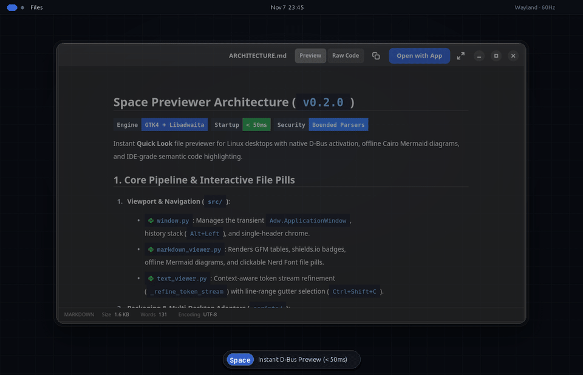

Instant Quick Look file previewer for Linux desktops. Rendered GFM with offline Cairo Mermaid diagrams, IDE semantic code highlighting, click-to-preview file links, continuous PDF, and zero-dependency Office & archive inspection.
$sudo apt install ./space-previewer_0.2.0_amd64.deb

A single Libadwaita header bar and unified bottom status bar across every viewer—from rendered Markdown and semantic code to continuous Poppler PDFs and streaming spreadsheets.
Preview Markdown documents with full GitHub Flavored Markdown tables, callouts, two-part shields.io badges, and crisp offline Cairo Mermaid flowcharts—without opening a browser.
.rs, .py, .js, .ts, .sh, .tomlCtrl+F search queriesBuilt natively on GTK4, Libadwaita, PangoCairo, and Poppler with strict resource bounds and zero background bloat when idle.
Local file paths in Markdown automatically render as high-contrast dark pills with language devicons. Click any pill—including line-range links like controller.rs#L14-L30—to jump straight into that file, then press Alt+Left to return to your exact scroll offset.
First-class D-Bus activation (`NautilusPreviewer2`) for GNOME Files, KIO Service Menu for KDE Plasma Dolphin, Action plugin for Cinnamon Nemo, and standalone CLI.
Every parser enforces hard byte, row, pixel, and time budgets so inspecting a huge or malformed archive, CSV, or Office file never freezes your desktop session.
Drag the line-number gutter in any code file or `Ctrl+Click` individual Markdown list items by indent level. Copy either the raw content or a formatted `path:start-end` reference directly into your terminal, PR review, or AI coding assistant.
src/viewers/text_viewer.py:16-26
Ctrl + Shift + C
How Space Previewer compares against standard desktop previewers on Linux.
| Capability | Other / Default Previewers | Space Previewer (v0.2.0) |
|---|---|---|
Markdown (.md, .mdx) |
Raw plain-text source only | Rendered GFM (tables, task lists, callouts, shields.io badges), offline Cairo Mermaid diagrams, Nerd Font file pills, Raw/Preview toggle |
| Click-to-Preview File Links | Not supported | Click any local file pill or #L10-L30 link to preview target code; Alt+Left restores exact scroll position |
| Semantic Code Highlighting | Basic keyword coloring | IDE token stream refinement (function calls, declarations, PascalCase types, constants, JS ${...} templates, Bash flags) |
| Line & Block Quote Copy | Not supported | Drag code line numbers or Shift/Ctrl+Click Markdown blocks by indent level to copy text or path:start-end |
In-File Search (Ctrl+F) |
Not supported | Non-grabbing overlay search across code, plain text, and rendered Markdown (Enter / Shift+Enter) |
Office (.docx, .xlsx, .pptx) |
Requires heavy external office suite | Zero-dependency direct ZIP/XML extraction with strict untrusted-input bounds |
CSV / TSV & Archives (.zip, .tar.*) |
Plain text / summary byte size only | Formatted scrollable table grid & full archive file tree without extracting to disk |
| PDF Documents | Single-page static view | Continuous fit-width Poppler viewport with lazy page rasterisation and animated page jumps |
Choose a native system package (`.deb`, `.rpm`, Arch `PKGBUILD`), portable `AppImage`, or rootless user-space install.
curl -LO https://github.com/todo-laterx/space-previewer/releases/download/v0.2.0/space-previewer_0.2.0_amd64.deb sudo apt install ./space-previewer_0.2.0_amd64.deb
Installs the Nautilus D-Bus preview service and KDE Dolphin service menu. Uses dpkg-divert to coexist cleanly with the default system previewer service and restores it automatically on removal.